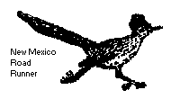
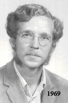
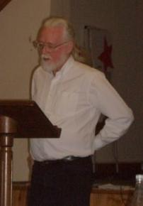

) Kelley L. Ross, Ph.D., retired from the Department of Philosophy, Los Angeles Valley College, Van Nuys, California 91401-4096, DrKelley at AOL.com
Kelley L. Ross, Ph.D., retired from the Department of Philosophy, Los Angeles Valley College, Van Nuys, California 91401-4096, DrKelley at AOL.com
Les's practice of supplying information on used car prices grew into the Kelley Blue Book. For many years the Blue Book was edited by my father, also named Kelley L. Ross, until his death in 1980. The Blue Book was long managed by my cousins in the Kelley family.
Sherlock Holmes, The Sign of Four [Sir Arthur Conan Doyle, 1890]
I am a VAL, I know
Moon Zappa, "Valley Girl," Frank Zappa, 1982
I take this [i.e. arguments about Leonard Nelson] to be extremely important. But it is almost as important to have received a letter from a man who takes philosophy (or anything) seriously. I thought the breed had died out.
Sir Karl Popper, personal letter to K.L. Ross, 12 December 1992
Tzu-lu spent the night at the Stone Gate. The gate-keeper said, "Who have you come from?" Tzu-lu said, "From the K'ung family." Confucius, Analects XIV:41/38, translation after James Legge [1893], Arthur Waley [1938], and D.C. Lau [1979]
I am glad to see that the UT philosophy department Steven Weinberg, Nobel Laureate in Physics (1979), e-mail to K.L. Ross, The Master said, "He is not concerned that he is not known; Confucius, Analects IV:14, translation after James Legge [1893], Arthur Waley [1938], D.C. Lau [1979], and Joanna C. Lee [2010]
I have often said, and oftener think, Horace Walpole, 4th Earl of Oxford (1717-1797), Exodus 2:22
How does Romania look to you? Doctrina Jacobi nuper baptizati (634 AD), A.H.M. Jones, The Later Roman Empire, 284-602 [The Johns Hopkins University Press, 1986, p. 316, translation modified], Greek text, "Doctrina Jacobi Nuper Baptizati," Édition et traduction par Vincent Déroche, Travaux et Mémoires, 11 [Collège de France Centre de Recherche d'Histoire et Civlisation de Byzance, De Boccard, Paris, 1991, p.167], color added Born: the Feast Day of St. Francis of Assisi, in Hollywood, California
Ulysses S. Grant High School, Van Nuys, California, 1964-1967
The University of New Mexico, Albuquerque, New Mexico, 1967-68
The University of California at Los Angeles, Los Angeles, California, 1968-71; B.A. Magnâ cum Laude in an Individual Field (Classical and Middle Eastern History, Languages, and Philosophy), June 1971; Phi Beta Kappa
The American University of Beirut, Lebanon, on The University of California Education Abroad Program (EAP), The University of Hawaii at Mânoa, Honolulu, Hawaii, 1972-74; National Defense Education Act (NDEA) Fellow, 1972-74; M.A. in Philosophy, May 1974
Part-Time Lecturer, Chaminade College (now University) of Honolulu, 3140 Waialae Ave., Honolulu, Hawaii 96816, 1974-75; extension classes at:


The keeper said, "He's the one who knows it's no use, but keeps on doing it; is that not so?"
turns out sane Ph. D.s.
18 September 1998

he seeks to be worthy of being known."
that this world is a comedy to those that think, a tragedy to those that feel --
a solution of why Democritus laughed and Heraclitus wept.
letter to Sir Horace Mann, 31 December 1769


dicens, advena fui in terra aliena.
[Moses] said, I have been a stranger in a strange land.


Does it stand as from the beginning or has it been diminished?

Resumé
 1969-70
1969-70
 |
|---|
| On the Beach in Hawai'i, 1973 |
The University of Texas, Austin, Texas, 1975-85; Ph.D. in Philosophy, May 1985; Dissertation: The Origin of Value in a Transcendent Function; Adviser: Dr. Douglas Browning, Department of Philosophy, The University of Texas at Austin
 |
|---|
| 10th High School Reunion, 1977; first viewing of Star Wars |
"Violence, Non-Violence, and Progress in History", Colloquy Discussion, December 7, 1979, Department of Philosophy, The University of Texas at Austin.
Part-Time Lecturer, San Antonio College, 1300 San Pedro, San Antonio, Texas 78284, 1982
Nel mezzo del cammin di nostra vita... Dante Alighieri, Inferno I:1
["Midway in the way of our life..."]
Full-Time Instructor (tenured), Los Angeles Valley College, 5800 Fulton Ave., Van Nuys, California 91401, 1987-2009, Chairman of the Department of Philosophy, Economics, and Jewish Studies, 2008-2009, now retired
Candidate, 28th California Congressional District, Libertarian Party, 2002, 2004, 2006
Founder, Publisher, & Editor, The Proceedings of the Friesian School, Fourth Series, 1996-present
 "Non-Intuitive Immediate Knowledge," Ratio, Vol. XXIX No. 2, Basil Blackwell, December 1987.
"Non-Intuitive Immediate Knowledge," Ratio, Vol. XXIX No. 2, Basil Blackwell, December 1987.
 "Nicht-intuitive (sic) unmittelbare Erkenntnis," Ratio (German edition), 1987 -- 29. Band, Heft 2, Felix Meiner Verlag Hamburg.
"Nicht-intuitive (sic) unmittelbare Erkenntnis," Ratio (German edition), 1987 -- 29. Band, Heft 2, Felix Meiner Verlag Hamburg.
 Candidate, 40th California State Assembly District, Libertarian Party, 1994, 1996, 1998, 2000
Candidate, 40th California State Assembly District, Libertarian Party, 1994, 1996, 1998, 2000
) |
|---|
| 40th High School Reunion, 2007 |
"The Roots of Rudolf Otto's Theory of Numinosity in Immanuel Kant, Jakob Fries, and Leonard Nelson," in the Philosophy of Religion section of The Southern California Philosophy Conference at the University of California, Irvine, Saturday, October 26, 1996.
"Philosophy's Friesian Alternative," presented in conjunction with the Student Philosophy Association & Associated Students, Inc. of California State University, Long Beach, organized by Russell Daley and Erik Baldwin, Tuesday, November 9, 1999.
|  |
|---|
| A Lecture on the Good, Oxford University, March 25, 2010 |
"A Lecture on the Good," delivered to the Oxford Round Table session, "Perspectives on Ethical Sentiments," at Hertford College of Oxford University on March 25, 2010.
"The Scientific Revolution in Mediaeval Physics: John Philoponus and the Rejection of Aristotelian Science," Philosophy Lecture Series, Los Angeles Valley College, April 17, 2012
"The Epistemology of F.A. Hayek," Colloquium Series, Center for the Philosophy of Freedom, The University of Arizona, September 11, 2012
"Machiavelli and Moral Philosophy," Philosophy Lecture Series, The Great Texts, Los Angeles Valley College, March 19, 2013
"The Origin of the Gold Standard and Its Effect on American Currency and Politics," Los Angeles Paper Money Club, May 8, 2013
Philosophy 308; Early Modern Philosophy; Hume, Kant, and the 18th Century; Rutgers University, Department of Philosophy, Spring 2017
[Joe] Leaphorn needed something interesting. He'd soon be finishing his first year of retirement from the Navajo Tribal Police. He'd long since run out of things to do. He was bored.Tony Hillerman, The First Eagle, 1989, HarperPaperbacks, 1999, p.27, cf. New Mexico
l'amor che move il sole e l'altre stelle. Dante Alighieri, Paradiso XXXIII:145
["The love that moves the sun and the other stars."]
Married, June 22, 1991, on the Triple Conjunction of Venus, Mars, and Jupiter (not to mention the asteroids Terpsichore and Parthenope), to Jacqueline I. Stone, Ph.D., Department of Religion, Princeton University, Princeton, New Jersey 08544-1006
Jeffie Lorraine Ventling, a daughter of my first cousin, Linda Ventling, was Miss Wyoming, 1997, and a participant in the 1997 Miss America Pageant. She was not among the finalists, but she did get to introduce herself on national television.
"Nicht-intuitive" is a mistranslation. It should have been "nicht-anschauliche." "Intuition" is the standard English translation of "Anschauung"; and "Anschauung" would have been the German translation of "Intuition" for Leibniz and Kant; but "Intuition" and "Anschauung" were used in German by Leonard Nelson to mean two different things. The galleys of the translation were not made available to the author before publication, and this mistake could not be corrected.
By "Anschauung" Nelson meant the Kantian sense of intuition as perception and as immediate knowledge. This had gotten a bit confused in Kant (because of the complications of the theory of synthesis), but he and the Friesians continued to use the term pretty much in that original sense. On the other hand, when Nelson used "Intuition," he meant the modern philosophical usage of "intuition" as an initial or spontaneous belief. "Intuitions" in that sense may be credible, but they may only be so at the very beginning of investigation. They are always fallible and corrigible. On the other hand, an "Anschauung" is neither fallible nor corrigible and in fact is not even a belief -- since all beliefs are fallible and corrigible.
The difference between "Anschauung" and "Intuition" is therefore part of a crucial and fundamental distinction for Nelson, who realized that "immediate knowledge" could not as such have a propositional form, i.e. express some predication ("S is P") or combination thereof ("S is P or Q is R"). A similar understanding has been used to dismiss the existence of immediate knowledge pretty much ever since; but Nelson simply inferred from it that only mediate, not immediate knowledge, is expressed propositionally. Immediate knowledge is what justifies synthetic propositions, and is therefore distinct from them. This only works well in a Kantian system where we can simultaneously say that immediate knowledge as experience is undecidably identical to phenomenal objects (Kant's "Empirical Realism"). These issues are covered in the essay "Ontological Undecidability".
My interest in Leonard Nelson and the Friesian School goes back to 1967. After this surprising connection turned up, I got into contact with Mrs. Vorster's sister, who was still alive, and obtained German editions of Nelson's Kritik der praktischen Vernunft and Fries's Neue oder anthropologische Kritik der Vernunft from Germany. My connection with the German Nelsonians, however, remained tenuous. After reading Nelson, Kant, some Kant scholarship, and other philosophy, it was clear to me that I was going to be working many things out for myself and that I had no intention of merely being a scholar or a disciple of Nelson, or of anyone else. I was also spreading myself far afield through interests in Islamic philosophy and the Middle East, where I actually spent my Junior Year at the American University of Beirut. I was not enough of a linguistic genius to perfect my German, Greek, Latin, Arabic, and Persian all together. Later, at the University of Hawaii, I developed similar interests in the Far East. Apart from these diversions (or broadening interests), there was also the awkwardness that, although I didn't agree with Nelson about everything, I did agree with him on a number of issues where Nelson's surviving philosophy students, like Grete Henry-Hermann and Gustav Heckmann, had abandoned the Friesian position.
My last serious contact with them was in 1974-75 when we exchanged letters over an essay I had submitted to their Prize Essay contest on Nelson. Just having devoted considerable study to Nelson's Critique of Practical Reason and Progress and Regress in Philosophy, my essay defended the Friesian conception of non-intuitive immediate knowledge and criticized Henry-Hermann's own recent evaluation of it in her "Significance of Behavior Study for the Critique of Reason" [Ratio, Volume XV, No.2, December 1973, pp. 206-220]. They were surprised that anyone still believed in that stuff. Certainly nobody else did. This all discouraged me about trying to pursue graduate study in Germany or Britain. I ended up making my way academically through American philosophy departments that had not been overwhelmed by analytic and linguistic orthodoxy, as at the University of Hawaii (where I had made friends with Lenn Goodman) and at the University of Texas (where the late Irwin Lieb, with some pleasant memories of having read Nelson as a student, took an interest in me). In the dissertation I eventually wrote, under the patient help and tolerance of Doug Browning at Texas, I tried to extend Nelson's thought with the help of complementary ideas, not just from Kant, but also from Schopenhauer and Otto.
My last happy contact with one of the surviving early figures of Nelson's group was with Paul Branton. I met Paul in Guadalajara, Mexico, in November 1985, where he was attending a philosophy conference that a friend of his at the University of Guadalajara, Fernando Leal Carretero, was putting on. Fernando himself had discovered Leonard Nelson while in school in Germany just by stumbling across the Gesammelte Schriften in a library! From that start, he had gotten in touch with the people who were still running Nelson's Philosophisch-Politische Akademie [note]. I had myself just happened to find out about Paul's connection to Ratio; and since Paul was coming to Guadalajara anyway, he offered to pay my way (I was in post-dissertation unemployment) so we could meet. The result was stories about the Nelson people over the years and a personal connection that I had missed developing with Nelson's students in Germany. The Philosophisch-Politische Akademie still functions and may be reached on the World Wide Web at http://www.philosophisch-politische-akademie.de/, or by mail at:
My interest in classical liberal economics and libertarian politics was much longer in coming than my connection with Friesian philosophy. I registered as a Democrat at 21 (voting age in those days) and first voted in a Presidential election for George McGovern. That orientation didn't change much over the years. Like a good "Liberal," I assumed that capitalism was basically OK but needed the fixups produced by the Progressive Era, the New Deal, and things like the Civil Rights Act of 1964. On the other hand, I was genuinely Liberal enough to believe in drug legalization but not in "affirmative action" preferential policies. I was against censorship, accepted Roe v. Wade, and supported "clothing optional" opportunities (a bit of an issue in the 70's), but at the same time I was against involuntary bussing to create racial balance at public schools. The first I heard of Libertarians was in connection with clothing optional issues in Austin, Texas. I approved of the Libertarians in that respect, though otherwise I thought they had an idiosyncratic, fringe ideology.
The tiny cloud on the horizon that ultimately upset this orientation was Karl Popper. The first I had heard of Popper, I rather disliked him, mainly because of his condemnation of Plato in The Open Society and Its Enemies. I didn't mind his condemnation of Hegel or Marx, but I still had too much of a sentimental regard for Plato on political issues where I didn't even really agree with him much anyway. Over time, however, I could only have respect for Popper's views about science, and before long I found his references to Fries in The Logic of Scientific Discovery. I thought that Popper had somewhat misconstrued Fries, but it impressed me that he was concerned with him at all. On the other hand, I didn't see much in Popper that was terribly helpful when it came to ethics or other value questions.
I discovered the key to a better application of Popper's ideas to ethics and politics in the Fall of 1991 when I happened to pick up a copy of F.A. Hayek's recently published The Fatal Conceit (1988). I cannot remember now just why I decided to have a look at the book. Hayek had come in for some public notice with the fall of the Iron Curtain in 1989 since he was one of the few Western economists who had always predicted the failure of socialized and command economies. So I learned of the principles on which he had made that prediction and discovered that he expressed them in terms of the epistemology of David Hume and Karl Popper. This struck me with the force of a revelation and rapidly changed almost everything I had ever believed about economics, capitalism, and much of the history of the 20th Century.
Hayek started me thinking. This all threw a hard light, not just on my own "Liberal" beliefs, but on the kinds of things that my friends, generally of the same persuasion, had always said and done. Indeed, in Austin in the 70's, I even knew some people in the Communist Party USA. At the time, they seemed to me in error, often seriously in error, but in retrospect the error began to seem of a much more tragic and dangerous character. It had already occurred to me that the events of 1989-91 had, after a fashion, turned the world inside out. It had already seemed peculiar that more recognition had not been given in public life to what it had all meant. As Milton Friedman was to say, it seemed that the failure of socialism had been taken to mean that more socialism (e.g. nationalized medicine) was necessary. People I knew who persisted in mildly or seriously leftist opinions seemed to me rather like what Talleyrand said of the Bourbons: They had learned nothing and forgotten nothing. On top of that, discovering an intellectual universe where the world had always been seen in a very different way anyway was just astonishing.
There remained one last element, however. What I knew and understood was changing rapidly enough, but I still lacked the emotional shove that would push me over into real political activism. That was finally provided by Ayn Rand, in an ironic way. In the later stages of our relationship, my first wife had read Rand's Atlas Shrugged and had liked it greatly. Her representation of it to me, however, was not very appealing. In particular, she related the incident where Hank Rearden refuses to provide a job, even some meaningless button-sorting job, for his worthless brother. I didn't think it would hurt Rearden to take care of his brother, but my wife thought he had done the right thing. This disagreement seemed to me to be a bad sign. Seventeen years later, it turned out that my present wife actually had an old copy of Atlas Shrugged herself, having found things she liked, as well as disliked, about the book. So, in January 1992, I sat down to finally read the book myself.
Although, as I have related elsewhere, there are serious problems with Rand's thought, Atlas Shrugged turned out to be an absolutely gripping and compelling book. My objection so many years before to Hank Rearden's behavior turned out to be based on an incomplete representation: His brother did not actually need a job because Rearden had already been supporting him for years! What the brother really wanted was some position where he still wouldn't have to do any work but could boss people around and lord it over them. To Rearden this was, very properly, unacceptable. Besides clearing up misunderstandings like that, Rand's book finally pushed me over the edge politically. Overcome with a moral passion rather like Rand's, I knew immediately that the only existing political organization that I could morally be associated with was the Libertarian Party. For a few days I thought I would support them even while remaining a Democrat, so I could vote in Democratic primaries; but then I realized that there was never going to be anyone worth voting for in a Democratic Primary. In light of the vast engine of theft, fraud, and tyranny that the Democratic Party had become, I would never be voting for any Democrat under any circumstances again. Far better to give everything to the Libertarians.
Now I have been a Libertarian Candidate for California State Assembly four times, getting 6% of the vote in 1994 and 8% in 1996, and a Candidate for Congress three times, with less impressive results. This has often seemed a hopeless task, especially when California adopted an "open primary" with the obvious, but dissimulated, purpose of eliminating minor parties from general election ballots, and some people might think that I am wasting my time and would be better advised to work within some major party. However, I will certainly not waste my time on the Republican, Democratic, or any other parties that are already so far gone in sophistry and tyranny that their ideology and practices would be unrecognizable, indeed a disgrace, to the Founders of the Nation. The truly Liberal views I already held in the 70's now find their mates in the Classical Liberalism of free market economics and the only political organization that is truly dedicated to Jeffersonian democracy. The hieroglyphic character above, 3kh, can mean "be beneficial, advantageous," or, as a noun (3kht), "something advantageous, usefulness." It can also mean "blessed spirit," as in the name of the heretic Egyptian king Akhenaton. It can also be used to write the words for "horizon," "tomb," the royal uraeus cobra, or the "beneficent" eye of the sun god Rê, all 3kht, or the word for "sunshine," 3khw. The causative, s3kh, can mean "beatify, render blessed" [Alan Gardiner, Egyptian Grammar, Oxford, 1964, p. 550].
3kh thus represents an important idea, and consequently Henri Frankfort chose it for the title page of his great Ancient Egyptian Religion, an Interpretation [Harper Torchbooks, 1961], the book I might say was ultimately responsible for directing my interest in the direction of philosophy. Ancient Egypt was the first area of scholarly knowledge that I had become interested in, all the way back when I was 11 or 12 years old. One of the early books that influenced me was Everyday Life in Ancient Times, published by the National Geographic Society [1961]. The "Daily Life in Ancient Egypt" section by William C. Hayes [pp.71-167] mesmerized me. I am glad to see that Camille Paglia says that "the Egyptians had 'taste'" and credits them with having "invented elegance" [Sexual Personae, Vintage Books, 1991, pp. 60-61]. It was not until 1991 that I finally saw in the Metropolitan Museum of Art the actual jewelry, elegant indeed, recovered from the tomb of the XII Dynasty princess Sit-Hathor-Yunet, portrayed, with her, on page 118 of Everyday Life. Hayes' statement that the victory of Thutmose III at the battle of Megiddo occurred on 15 May 1478 BC [p.144], led, rather absurdly, to a minor celebration of "Megiddo Day" at my junior high school in 1964.
One of the most fascinating things to the 12-year-old me, which would certainly horrify "family values" and "child protective" advocates today, was the portrayal of Egyptian nudity in "Daily Life in Ancient Egypt." Indeed, the National Geographic Magazine derived much of its popularity for decades from the fact that it was the only accessible and mainstream publication that depicted nudity. Most of that turned out to be less interesting to me than a representation of nudity in the context of a civilization that obviously did not consist of "primitive" peoples, whose nakedness might just be the result of their poverty, their ignorance, or an equatorially hot climate. Throughout Egyptian history, female dress frequently was all or partially bare breasted, and complete nudity, male and female, is occasionally found represented in portrayals of daily life in private Egyptian tombs, as it was then reproduced (often as versions of the tomb originals) in the colorful illustrations of the National Geographic book. It was pretty mild stuff by any standards, e.g. the young daughter of Menena (now usually rendered "Menna") on page 149 [ The first talks I ever gave on anything in a classroom were impromptu outlines of Egyptian history in a couple of high school classes. That occurred on days we had substitute teachers, who didn't quite know what to do, and somehow the idea got broached that I could tell everyone about Egypt. I enjoyed doing that, though I am sure it all seemed very strange. It was about that time, when I was around 16, that I came across Frankfort's book. His discussion of the Egyptian "instruction" literature, like the "Instruction of Ptahhotep" [cf. Miriam Lichtheim, Ancient Egyptian Literature, Volume I: The Old and Middle Kingdoms, University of California Press, 1975, p.61], and especially of the Egyptian concept of M39t ("Maat"), "Truth," had a profound, even revelatory impact on me. Now I can see that it was, indeed, a version of the idea of Natural Law: Even the god-king of Egypt was expected to conform to its dictates. The purpose of Egyptian kingship was to restore things as they had been "in the beginning," when the gods had established M39t in the first place. This prepared me for the similarly revelatory experience when I was introduced to Socrates and Greek philosophy just about a year later. Indeed, I had already decided, thinking about Frankfort, that I could do no better in life than to pursue wisdom.
My love of Egypt at first directed my interest into archaeology, and that determined my first college destination: the To my surprise, it wasn't long before I was in Egypt itself. To my Arabic class at UCLA came a University official who was trying to interest people in going to Lebanon on the University of California program. So in 1969-70, when the Lebanese civil war wasn't yet even a cloud on the horizon, I spent my junior year at the For all my interest in Egypt, I had never liked pictures of mummies. I still don't. The Egyptians themselves wouldn't have been interested in anything of the sort. The dead to them were neatly and pleasantly concealed once they came from the embalmer. Fortunately, in my childhood, books about Egypt didn't always, and sometimes never, had such pictures. But I could not pass up seeing people who, after three thousand years, were actually still around to be seen; and in the bright open space of the Cairo Museum mummy room, with the kings and others laid out head to toe, the whole scene was so fascinating that the horror of the ancient dead didn't bother me at all. The wound that killed Tao II of the XVII Dynasty, probably fighting the Hyksos, was still plainly visible on his forehead. Plato, Alexander, Caesar, and Constantine had all gone to dust, and some people argue about whether Jesus even existed, but Thutmose III and Ramesses II are still there, older than them all, in their quiet repose of eternity, just as they intended -- after the priceless service of the loving priests of the XXI Dynasty, who cached them all, despoiled by the tomb robbers, safely away. When the body of Ramesses II was flown to France for treatment, he was received with the full military honors of a Head of State. He would have expected no less, even from barbarians in some distant terra incognita.
After Beirut, my life went off in new directions, and nowhere near Egypt again, except indirectly through the astounding collection at the Metropolitan Museum of Art in New York City. But what I loved about Egypt, and a few other things, like rain, weren't there anyway. M39t -- truth and justice -- turns out to be anywhere, and "its worth is lasting" still, just as to Ptahhotep.
Autobiographical statements: Long Drives
2010-2012,
2013on Leonard Nelson
the Socrate Soda Fountain
Yoda
Hotei
Personal statements: The Kind of Libertarian
I AmCalifornia
Judge Dee In Memoriam There are many people I might memorialize in these pages, but I limit this category to people I knew, after a fashion, personally. Some of these were personal friends, like Lynn Burson, Frank Lambert, and O.L. Harvey. These were not people known to a general public.
Another was a relative, Marty Ehrlich, who was my father-in-law. He was not known to a general public either, but his life was one of connections with notable historical importance, and in more than one respect. Then there were people in philosophy I knew personally, namely Irwin C. Lieb and Jerrold Katz. Lieb I knew in the course of graduate school. Katz I sought out because of his book, and he seemed gratified that I was as enthusiastic about his work as I was. Edgar Goyette was in philosophy also, but of all the people here he is the only one I did never know nor meet. He had died before the likelihood of our meeting or contact would ever have arisen. But Goyette was involved in the Friesian School, which in the United States was rare to vanishing. Lynn Burson
Frank Lambert
Paul Branton  And I did meet his son, and now have Goyette's books, making me, I suppose, a sort of heir. Also, because of where he lived, I passed tantalizingly close to him more than once, with sad irony not knowing he was there. Paul Branton, who was himself intimately involved with the post-War Friesian School, I did meet once and would have liked to have known a lot better; but that would have taken the money, and then the leisure, that I did not have at the time to travel to England. While O.L. Harvey I knew (by mail) but never met, Roy Beaumont I met, once, but didn't know. As with Goyette, Beaumont is a special case, where his association with Valley College made his connection to me both personally and professionally important. Teaching at Valley and knowing many people who knew him well, and might on occason relate new stories, made him hard to forget. He was also a classic character, something I am sure not many people would say of me.
And I did meet his son, and now have Goyette's books, making me, I suppose, a sort of heir. Also, because of where he lived, I passed tantalizingly close to him more than once, with sad irony not knowing he was there. Paul Branton, who was himself intimately involved with the post-War Friesian School, I did meet once and would have liked to have known a lot better; but that would have taken the money, and then the leisure, that I did not have at the time to travel to England. While O.L. Harvey I knew (by mail) but never met, Roy Beaumont I met, once, but didn't know. As with Goyette, Beaumont is a special case, where his association with Valley College made his connection to me both personally and professionally important. Teaching at Valley and knowing many people who knew him well, and might on occason relate new stories, made him hard to forget. He was also a classic character, something I am sure not many people would say of me.
Copyright (c) 1996, 1997, 1998, 1999, 2000, 2001, 2002, 2003, 2004, 2005, 2006, 2007, 2008, 2009, 2010, 2011, 2012, 2013, 2014, 2016, 2017, 2018 Kelley L. Ross, Ph.D., Postumus Friesianorum, All Rights Reserved
Resumé, Note
On Leonard Nelson
In high school, an English teacher, Frank Cousens, had introduced philosophy in his course by having us read Plato's Apology of Socrates right in class, a practice I continue every semester in my Introduction to Philosophy classes. Cousens's enthusiasm for knowledge and contempt for pathetic excuses for philosophy like Logical Positivism were formative inspirations for my career in philosophy. The following summer, after we had graduated, my best friend, neighbor, and classmate from Cousens's class, Lee Herman, who now teaches for the Empire State College of the State University of New York, was out looking for books about Socrates and Socratic Method. What he found was the Dover edition of Nelson's Socratic Method and Critical Philosophy, which contained Nelson's classic essay, "The Socratic Method." I obtained my own copy, and then a curious thing happened. My German teacher from high school, Ola Vorster, had invited many of her old students over for a party. While talking with her at the party, I happened to mention that I had gotten interested in philosophy. She then asked if I had ever heard of "Leonard Nelson"! It turned out that when she was a child in Switzerland, her family had rented a room to a man who was contributing money to Nelson's Philosophisch-Politische Akademie. This eventually led to her older sister, Masha Oetli, joining the Academy. Mrs. Vorster herself was briefly at the Academy but decided to go into medicine instead. After World War II, disgusted with the Swiss showing a friendliness to Nazi refugees that they had not shown to earlier Jewish refugees, she came to America; but in her home in Los Angeles she still had a German pamphlet of Nelson's Die Socratische Methode.
Autobiographical statement on Leonard Nelson, Note
Philosophisch-Politische Akademie e.V.
c/o Dr. Dieter Krohn
An den Papenstücken 21
D - 30455 Hannover
Germany
On Libertarianism
On Egypt

 see left], from the original on page 123 (the Sheikh Abul-Qurna tomb Th 69) [
see left], from the original on page 123 (the Sheikh Abul-Qurna tomb Th 69) [ see right], and the serving girls at the banquet on page 157 [see below right, patterned on the banquet in the tomb of Nebamun, Sheikh Abul-Qurna tomb Th 90]; but it served both to awaken some sexual consciousness and to introduce a subversive element into my thinking about life. If the Egyptians were so free showing their bodies, why weren't we? I still think this is a good question, even while the Nudity Taboo of the Egyptians' Asiatic neighbors, promoted into the modern world by Judaism, Christianity, and Islam, seems to have firmly clamped down again after a bit of 60's and 70's experimentation.
see right], and the serving girls at the banquet on page 157 [see below right, patterned on the banquet in the tomb of Nebamun, Sheikh Abul-Qurna tomb Th 90]; but it served both to awaken some sexual consciousness and to introduce a subversive element into my thinking about life. If the Egyptians were so free showing their bodies, why weren't we? I still think this is a good question, even while the Nudity Taboo of the Egyptians' Asiatic neighbors, promoted into the modern world by Judaism, Christianity, and Islam, seems to have firmly clamped down again after a bit of 60's and 70's experimentation.
 Of course, conducting oneself in a certain way out of belief in the modesty requirements of a specific religion is unobjectionable; imposing the same conduct on others by law is tyranny -- there is no truly moral reason why people should not simply go naked in public, as some have in many world cultures, without any particular effect on sexual practices. Indeed, such public nudity as we still see in India is among holy men who have renounced sex and family life -- though the universally bare upper torsos of women that we see in Classical Indian art have vanished. Besides an absence of a legal notion of "indecent exposure," Egyptian hieroglyphic writing often consisted of what now would be regarded as obscene graffiti. What Egypt represented for me then was perhaps what Sâmoa represented to Margaret Meade, with equal parts of fantasy: A freer and more sensual life than what seemed available where I was.
Of course, conducting oneself in a certain way out of belief in the modesty requirements of a specific religion is unobjectionable; imposing the same conduct on others by law is tyranny -- there is no truly moral reason why people should not simply go naked in public, as some have in many world cultures, without any particular effect on sexual practices. Indeed, such public nudity as we still see in India is among holy men who have renounced sex and family life -- though the universally bare upper torsos of women that we see in Classical Indian art have vanished. Besides an absence of a legal notion of "indecent exposure," Egyptian hieroglyphic writing often consisted of what now would be regarded as obscene graffiti. What Egypt represented for me then was perhaps what Sâmoa represented to Margaret Meade, with equal parts of fantasy: A freer and more sensual life than what seemed available where I was.  That was certainly not something I was likely to find in modern Egypt, though I did eventually live a life rather like what I had imagined, with my first wife, lovelier than Menna's daughter, in Hawai'i.
That was certainly not something I was likely to find in modern Egypt, though I did eventually live a life rather like what I had imagined, with my first wife, lovelier than Menna's daughter, in Hawai'i.
 University of New Mexico in Albuquerque. With all the archaeological sites of the American Southwest, New Mexico had an excellent program. My problem turned out to be that the way into archaeology was through anthropology, about which I was nowhere near as interested, and I had already caught the philosophy bug. After starting with a dual major of Anthropology and Philosophy at New Mexico, I moved on to UCLA my sophomore year to continue with Greek, take Arabic, and forget about anthropology. My historical interest then moved into larger Classical and Middle Eastern areas, as my philosophical interests had been attracted by Leonard Nelson and Immanuel Kant.
University of New Mexico in Albuquerque. With all the archaeological sites of the American Southwest, New Mexico had an excellent program. My problem turned out to be that the way into archaeology was through anthropology, about which I was nowhere near as interested, and I had already caught the philosophy bug. After starting with a dual major of Anthropology and Philosophy at New Mexico, I moved on to UCLA my sophomore year to continue with Greek, take Arabic, and forget about anthropology. My historical interest then moved into larger Classical and Middle Eastern areas, as my philosophical interests had been attracted by Leonard Nelson and Immanuel Kant.
 American University of Beirut. This put me within striking distance of Egypt, and I went there on a Lebanese tour, with Beirutis and AUB students and academics, over Christmas vacation, including Christmas Day, of 1969. By then I knew quite a bit about the Middle East and Islam and wasn't merely interested in the ancient sites. It was also a year in which the state of war between Egypt and Israel had heated up a bit: Tourists could only go a few places, the windows of the Cairo Museum were taped up against bomb damage, and the police were jumpy about people taking pictures of things like bridges. Otherwise the country and people seemed easy going enough. I was fortunate to get to the Valley of the Kings at a time when the tomb of Seti I was still open. I rode on horseback with one other adventurous AUB student from Saqqara to Giza, passing by the pyramids at Abu Sir, where the boundary between desert and cultivation was still exactly where it had been when those V Dynasty pyramids were built, four thousand years earlier. I also braced myself to see the mummies of the kings in the Cairo Museum.
American University of Beirut. This put me within striking distance of Egypt, and I went there on a Lebanese tour, with Beirutis and AUB students and academics, over Christmas vacation, including Christmas Day, of 1969. By then I knew quite a bit about the Middle East and Islam and wasn't merely interested in the ancient sites. It was also a year in which the state of war between Egypt and Israel had heated up a bit: Tourists could only go a few places, the windows of the Cairo Museum were taped up against bomb damage, and the police were jumpy about people taking pictures of things like bridges. Otherwise the country and people seemed easy going enough. I was fortunate to get to the Valley of the Kings at a time when the tomb of Seti I was still open. I rode on horseback with one other adventurous AUB student from Saqqara to Giza, passing by the pyramids at Abu Sir, where the boundary between desert and cultivation was still exactly where it had been when those V Dynasty pyramids were built, four thousand years earlier. I also braced myself to see the mummies of the kings in the Cairo Museum.
){kind=link}
){kind=link}
){kind=link}
){kind=link}